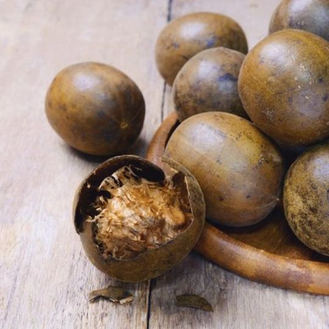
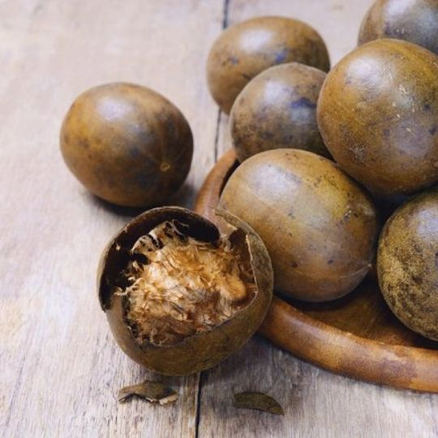

Ecodiamonk: Solusi Herbal Alami untuk Kesehatan Optimal Anda
Jamu tetes herbal premium yang diformulasikan dari ekstrak Daun Kelor, Daun Sirsak, dan Buah Lo Han Kuo untuk membantu memelihara daya tahan tubuh.
Pesan Sekarang via WhatsAppMengapa Memilih Ecodiamonk?
Keunggulan yang menjadikan Ecodiamonk pilihan terbaik untuk kesehatan Anda.
100% Bahan Alami
Dibuat dari ekstrak Daun Kelor, Sirsak, dan Lo Han Kuo berkualitas.
Kaya Manfaat
Membantu mengatasi kolesterol, asam urat, diabetes, dan menjaga imunitas.
Teruji & Aman
Terdaftar resmi di BPOM (TR 202601521) dan bersertifikat Halal.
Praktis Dikonsumsi
Cukup teteskan ke dalam 250 ml air dan siap diminum.
Tentang Ecodiamonk
Ecodiamonk adalah jamu tetes herbal alkali premium yang diproduksi oleh PT. BAYU INSAN GEMILANG PROFITINDO. Diformulasikan secara khusus untuk menjadi solusi kesehatan yang praktis dan efektif bagi masyarakat modern.
Dengan komitmen untuk menyediakan produk terbaik dari alam, tujuan utama Ecodiamonk adalah membantu Anda dan keluarga memelihara kesehatan tubuh secara alami, aman, dan berkelanjutan.
Kekuatan 3 Bahan Herbal Pilihan
Daun Kelor
- Kaya antioksidan dan nutrisi.
- Membantu mengontrol tekanan darah dan gula darah.
- Baik untuk kesehatan lambung dan pencernaan.
Daun Sirsak
- Berkhasiat sebagai antivirus dan antibakteri.
- Efektif membantu menurunkan kadar kolesterol.
- Membantu mengatasi insomnia dan meningkatkan imun.
Buah Lo Han Kuo
- Berfungsi mengontrol gula darah.
- Membantu meredakan radang tenggorokan.
- Menangkal radikal bebas & hambat sel kanker.
Galeri Produk & Bahan Alami

 

Memahami Healing Crisis
Healing crisis atau krisis penyembuhan adalah reaksi positif bersifat sementara yang menandakan tubuh sedang dalam proses detoksifikasi dan perbaikan sel. Jangan khawatir, ini adalah tanda awal tubuh Anda merespon herbal secara positif.
Setelah proses ini selesai, sel-sel akan berfungsi normal dan sistem pertahanan tubuh menjadi lebih kuat.
Apa Kata Mereka Tentang Ecodiamonk
"Diabetes Normal Setelah Konsumsi Ecodiamonk"
"Testimoni Badan Pegel Ecodiamonk"
"Stroke Sembuh 1 Minggu Setelah Konsumsi Ecodiamonk"
"Asam Urat Sembuh Setelah Konsumsi Ecodiamonk"
"Kista Sembuh Dalam 2 Hari Setelah Konsumsi Ecodiamonk"
"Ecodiamonk Jossss di Ranjang, Stamina Lelaki Perkasa"
"Kolesterol Turun Drastis Setelah Konsumsi Ecodiamonk"
"Testimoni Ecodiamonk Untuk Sakit Komplikasi"
Cara Konsumsi Ecodiamonk
Dosis Umum
- Siapkan segelas air mineral (±250 ml), usahakan air hangat.
- Teteskan 2-3 tetes Ecodiamonk ke dalam air.
- Untuk Menjaga Kesehatan: Minum 2x sehari (sebelum dan bangun tidur).
- Untuk Membantu Penyembuhan: Minum 3-4x sehari.
Perhatian Khusus
- Untuk penderita gagal ginjal dan jantung, mulai dengan dosis 1 tetes per hari terlebih dahulu untuk adaptasi.
- Jangan lupa untuk berdoa sebelum minum untuk memohon kesembuhan kepada-Nya.
Dapatkan Ecodiamonk Sekarang Juga!
Hubungi distributor resmi kami untuk pemesanan dan konsultasi gratis.

TR 202601521

Tersertifikasi Halal